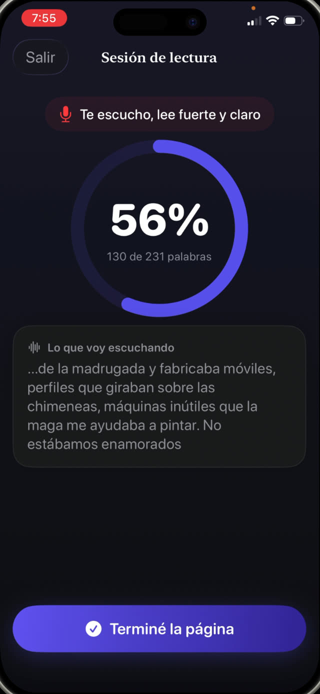

Importa porque es el puente entre decodificar y comprender. Un chico que gasta toda su atención en sonorizar palabras no le queda nada para el sentido de la oración. El ejercicio que la construye es simple, viejo y algo pasado de moda: leer en voz alta, casi todos los días, unos diez minutos.


Las tres partes de la fluidez
- Precisión. Leer las palabras que están en la página, no las que sugiere su forma.
- Ritmo. Un paso conversacional. Demasiado lento rompe la oración; correr suele significar que se soltó la comprensión.
- Prosodia. Expresión y fraseo: pausar en las comas, subir en una pregunta, darle voz a un personaje. Esta es la parte que demuestra que se entendió.
Por qué en voz alta, y por qué a ti
La lectura en silencio esconde todo. Un chico puede mover los ojos por una página durante diez minutos y no absorber nada, y ninguno de los dos se enteraría.
Leer en voz alta vuelve audible el proceso. Escuchas las palabras que se saltea, las que adivina por la primera letra, los lugares donde la oración se desarma. Es además la única versión en la que un error se puede corregir en el momento en que ocurre.
La rutina de diez minutos
- Elige un libro un poco por debajo de su nivel de frustración. La práctica de fluidez necesita un texto que pueda leer casi entero, no uno que pelee con él.
- Pon un temporizador de diez minutos para que el final esté definido y no se negocie.
- Que lea en voz alta. Siéntate lo bastante cerca como para escuchar, y aguántate las ganas de llenar los silencios.
- Anota los errores sin interrumpir a mitad de oración, salvo que se pierda el sentido.
- Al final, haz una sola pregunta real sobre lo que pasó. Una. No un cuestionario.
Cómo corregir sin arruinarlo
El instinto es saltar sobre cada error. No lo hagas. La corrección constante convierte la lectura en una actuación que están calificando, y los chicos se bajan de las cosas en las que los califican.
Espera al final de la oración. Si el sentido sobrevivió al error, déjalo pasar. Si no sobrevivió, di la palabra y sigue sin explicaciones. Las explicaciones son para después, y sobre todo para los errores que se repiten.
Medir el progreso sin cronómetro
Las palabras por minuto son lo que miden las escuelas, y son una mala cosa para perseguir en casa: los chicos a los que cronometran aprenden a correr. Lo que quieres ver a lo largo de las semanas es un fraseo más parejo, menos tropiezos con las mismas palabras, y más expresión.
Con un registro simple de qué se leyó y cuándo alcanza. Te dice si la práctica está ocurriendo de verdad, que es la variable que más importa.
Práctica que lleva su propio registro
Guardian Reader escucha mientras tu hijo lee en voz alta las páginas escaneadas y compara lo que oye con ese texto exacto, mostrando un porcentaje de coincidencia en vivo mientras avanza. El mínimo de aprobación es ajustable, así un chico que está aprendiendo a leer no se mide con la vara de un adolescente.
Cada sesión se guarda con la fecha, los minutos, las páginas y las palabras que realmente se leyeron, y eso se convierte en una imagen honesta de la práctica a lo largo del año escolar, sin que nadie tenga que completar una planilla.
La lectura desbloquea la pantalla.
Gratis · Sin cuentas, sin rastreo
Descargar Guardian Reader para iPhone